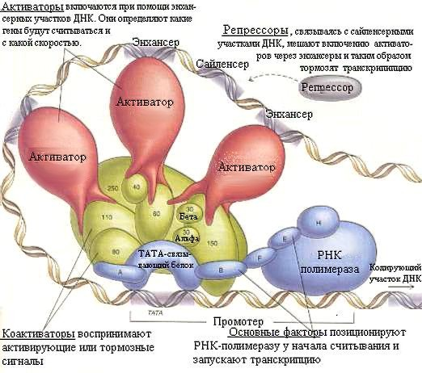
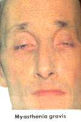
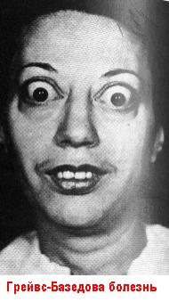
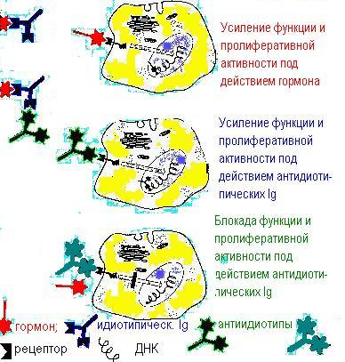

Недеструктивные последствия взаимодействия клеток со специфическими антителами.
По современным представлениям, действие противоклеточных антител и аутоантител не обязательно ведет к альтерации клетки-мишени и окружающих тканей. Антитела, направленные против клеточных рецепторов, согласно закономерностям рецепторного эндоцитоза, будут подвергаться быстрой интернализации и ускользать от взаимодействия с гуморальными и клеточными агентами альтерации, действие которых активируют иммуноглобулины, остающиеся на клеточной поверхности (Г.Бендиксен 1976, Р.Вольпе,1981; Л. Харрисон,1982; М. Блечер 1984; А.Ш. Зайчик и соавт. 1988). Кроме того, при гиперэргических реакциях 2 типа не редкость - иммуноглобулины, направленные против внутриклеточных и внутриядерных, а не только против поверхностных и экстрацеллюлярных антигенов. Как показано в работах А.Ш.Зайчика и соавторов (1973-1991), Д.Аларкона-Сеговии и др. (1973-1983), Г.Седлачека и соавторов (1983); М.Цунеоки и соавт.(1986) - такие антитела быстро проникают внутрь живых клеток и их ядер. В подобных случаях взаимодействие клетки с антителом имеет результатом различные изменения клеточной пролиферации и генетически детерминированных функций клетки-мишени без ее деструкции, а антитело выступает как гормоноподобный регулятор (в нормальных условиях) или дисрегулятор (при избыточном действии данных механизмов). Антитела к рецепторам могут ингибировать связывание природного лиганда с рецептором, нарушать ионный транспорт через рецептор, ускорять деградацию рецепторов - во всех этих случаях их действие на рост или на функцию клеток будет блокирующим. Весьма частым последствием действия антирецепторных антител на клетку является замещение иммуноглобулином функций лиганда (частичное либо полное, длительное либо кратковременное). Клинически при этом наблюдается гиперфункция и/или гиперплазия клеток-мишеней. Антитела могут, например, вызвать гиперпродукцию гормона или секрета, ускорение деления клеток или индукцию гипертрофических изменений в клетках, не вступающих в митоз. Получены антирецепторные или антиядерные иммуноглобулины, имитирующие полностью или частично эффекты пролактина (Ж.Джанне и соавт.,1981; Р. Шиу, Х.Фриеску, 1976), эпидермального фактора роста (Д.Господарович, 1983), инсулина и вазопрессина (Т.Рейлли, Р.Рут, 1986; И.Кохен, Й.Шехтер, 1988), АКТГ, ТТГ и либеринов гипоталамуса (А.Ш.Зайчик и соавт., 1969-1988, Х.Людденс и соавт, 1982), инсулиноподобного фактора роста (Дж. Хэри и соавт., 1987). Поскольку иммунологический блок или стимуляция антителами клеточных рецепторов целиком приходится на аутоиммунные взаимодействия, подобные состояния будут обсуждаться также в главе об аутоиммунитете. В данном разделе мы ограничимся лишь одной, практически важной иллюстрацией из области астмологии.
П.Куро и соавт. (1983) установили, что одним из механизмов бронхиальной астмы и аллергического ринита, независимым от анафилаксии, может быть так называемый пато-рецепторный механизм. При этом образуются блокирующие действие b2-адренэргических сигналов аутоантитела к соответствующему бронхиальному рецептору. Возможно как спонтанное возникновение этих аутоантител (в таком случае астматическому бронхиту предшествует аллергический ринит без гиперпродукции IgE), так и индукция подобных аутоантител лечением: при частом и обильном использовании b-адренэргических бронхолитиков в качестве монотерапии для купирования приступов при классических формах бронхиальной астмы. Антирецепторные антитела формируются, как аутоантиидиотипические иммуноглобулины против антител к лекарству.
Установлена важная роль подобных антирецепторных антител в патогенезе наиболее опасного осложнения леченной бронхиальной астмы - астматических статусов, обусловленных резистентностью больных к бронхолитикам. Интересно, что А. и И. Сент-Иваньи, еще в 1980-1985 году высказали неклассическую гипотезу о природе анафилаксии, основанную на идее, что это явление представляет собой системную недостаточность функций b2-адренорецепторов, а иммунологические феномены при нём имеют вторичный характер.

Антиидиотипические аутоантитела могут даже замещать функцию антигенов-ферментов, например, цитохромов (И.Н.Алексеева и соавт., 1987). По нашему мнению, термин "цитотоксические" неприложим к подобным недеструктивным реакциям, хотя их механизмы и имеют много общего с гиперэргическими реакциями 2-го типа. Нами предлагается для обозначения этих процессов в норме термин “циторегулирующие реакции”, а для их патологических проявлений - обозначение “дисрегуляторные реакции”. Возможно также употребление для всей совокупности реакций, опосредованных противоклеточными иммуноглобулинами, термина: “цитокинетические реакции”.
Таблица 7
Классификация цитокинетических реакций.
Литические |
Цитотоксические
реакцкии |
Цитостимулирующие
реакции |
||
Статические |
Тормозные |
Активирующие |
Регенеративные |
|
Резус- конфликт. |
Атрофия коры надпочечников |
Астматический статус |
Болезнь фон Базедова (антитела против ганглиозидной части рецептора ТТГ) |
Микронодуляр-ная гиперплазия
коры надпочечников |
Инсулинзависи-мый сахарный диабет |
Препубертатная задержка роста |
Гипотиреоз |
Стимулирующие антитела к ДНК-протеиду клеток корко-вого веще-ства надпо-чечни-ков (в эксперименте) |
Гипертрофичес-кая кардиомиопатия |
Гломеруло-нефрит |
Атрофический гастрит |
Миастения гравис |
Ауто-иммунная гипогликемия (инсулиномиме-тические аутоантитела) |
Спорадический зоб (антитела против белковой части рецептора ТТГ) |
Литические реакции - это цитотоксические реакции, заканчивающиеся разрушением клеток-мишеней. Так, аутоантитела к митохондриям запускают литический механизм, оканчивающийся гибелью печеночных клеток при первичном билиарном циррозе. Аутоантитела к цитоскелету и ядерным антигенам гепатоцитов провоцируют их некроз при хроническом активном гепатите. Статические реакции - это результат блокады рецепторов ростовых факторов тех или иных клеток, в результате чего останавливается пролиферация клеток-мишеней, без их прямого разрушения. Тормозные реакции представляют конкурентное ингибирование антителами эффекта того или иного биорегулятора за счёт связывания поверхностных и внутриклеточных антигенов, ответственных за запуск какого-либо метаболического процесса (транспорт, синтез, распад). Последствия заключаются в торможении того процесса, который антитела мешают дерепрессировать. Рецептор, в комплексе с антителами, может уходить с поверхности клетки и разрушаться в лизосомах, как это, вероятно, и происходит с Н-холинергическим рецептором при тяжелой миастении.

......
Цитостимулирующие антитела - направленные против ядерных, цитоплазматических или поверхностных антигенов конкурентные синэргисты биорегуляторов, дерепрессирующие процессы митоза, синтеза ДНК, транскрипции и другие метаболические реакции. Если они стимулируют рост и деление клетки - применим термин “регенеративные реакции”, а если речь идёт о биосинтетических процессах (например, стероидогенезе) - “активирующие реакции”.

Подобные иммуноглобулины могут образовываться, как антиидиотипы против антител к биорегуляторам и служить пространственной репликой последних. Действие моноспецифических цитостимулирующих антител, по-видимому, в любых дозах не ведёт к цитолизу.
|
|
|
|
|